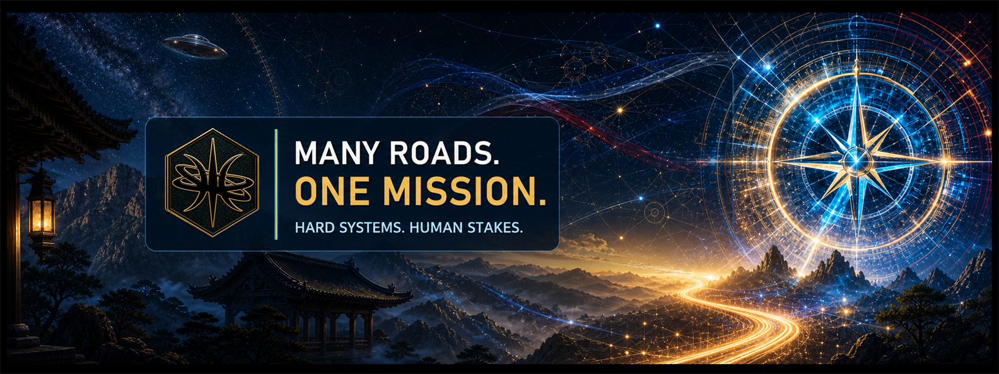

Keep consequential work human-governed.
Life First Framework · TWiN Compass · KEMPO
Open the pathway →
Behavioral health intelligence // accountable AI
The Wizard Nexus connects behavioral-health practice, governed AI, local-first technology, and evidence-centered workflows so trusted people can understand emerging risk and act earlier.
Woman-led Veteran-founded Morals before machinery Humans accountable
Behavioral health evolved
We perform cutting-edge behavioral-health research and build tools that turn data-driven insight into earlier human action. The work helps individuals, teams, organizations, and communities strengthen resilience, optimize performance, detect emerging risk, and prevent crises.
At its center is PreCrisis AI: technology designed to help people recognize signs of trouble early enough for meaningful intervention.
Our moral bearing is explicit: protect life and dignity, preserve human agency, act proportionately, and keep accountable people responsible for consequential decisions and repair.
Optimize Detect Prevent Intervene
Follow the practiceThe public nexus
The individual sites keep their own identity. These pathways make their roles and relationships easier to understand.
Life First Framework · TWiN Compass · KEMPO
Open the pathway →ARCANE OS · Arcane OS SDK · Arcane Exchange · DBOPFS · DBOPFS Studio · SpellWire · Toshokann
Open the pathway →PreCrisis AI · Scamurai · Redress · Sentinel
Astrolabe maps systems, programs, audiences, evidence, and relationships beyond the public sites.
Open Astrolabe ↗Separate nonprofit pathway
TWiN develops systems, tools, and evaluation methods. Zen Sentry Foundation brings selected approaches into nonprofit research, Veteran, and community settings while remaining a separate organization.
Choose a bearing
Each part of the work has a focused place, so you can reach the answer without crossing an endless landing page.
Open every live interface, see its header, understand its maturity, and inspect public source where it exists.
Explore the portfolio → 02 // PRACTICEEarlier action, shaped by humans.PreCrisis, KEMPO, and the disciplines behind the work.
Follow the method → 03A // PHILOSOPHYMorals before machinery.KEMPO, Life First, and the ethical commitments that govern consequential work.
Read our moral bearing → 03 // TRUSTEvidence before theater.Decision authority, privacy, maturity, and source boundaries.
Inspect the boundaries → 04 // PEOPLETwo paths. One mission.Meet Johanna “JZ” Zollmann and Roshi.
Meet the builders → 05 // SERVICESBring a complex mission.Strategy, programs, policy, private AI, and human-centered cyber work.
See ways to work together → 06 // PUBLIC SIGNALMeasured, sourced, and modest.Current ecosystem bearings and official package telemetry.
Read the signal → 07 // CONTACTThe dojo is open.Start with the people, context, evidence, and decision that matter.
Start a conversation →
The people behind TWiN
JZ’s behavioral-health practice and Roshi’s systems engineering meet in a shared design instinct: listen carefully, preserve context, and keep people responsible for consequential choices.
Meet the team
Static public snapshot embedded; live refresh runs when available.